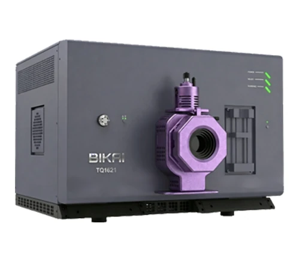

◆ Масс-спектрометрия
TQ 1621
Тройной квадруполь LC-MS/MS · модели A и B
m/z 5–1250≤0,1 а.е.м. за 24 ч≥500 MRM/сПредел обнаружения <2,0 фг по резерпину, ESI+Работа только на азоте
Открыть страницу первоисточника ↗
BIKAI TQ 1621 — тройной квадрупольный LC-MS/MS с пределом обнаружения на уровне фемтограммов, работающий исключительно на азоте без необходимости баллона с аргоном. Коллизионная ячейка с изогнутой траекторией 180° и осевым линейным ускорением устраняет нейтральные частицы из ионного пучка и ограничивает перекрёстные помехи MRM до 0,01%, сохраняя высокую чувствительность даже для сложных реальных матриц образцов. Полная система поставляется со встроенным PSA-генератором азота и безмасляным сухим форвакуумным насосом с 5-летним необслуживаемым ресурсом — это снимает необходимость в контракте на поставку аргона, управлении газовыми баллонами и регулярной замене масла.
Чувствительность (модели A и B)
| Параметр чувствительности | TQ 1621A | TQ 1621B |
|---|---|---|
| S/N, ESI+ MRM (1 pg reserpine, RMS) | ≥1,500,000:1 | ≥2,000,000:1 |
| IDL, ESI+ (10 fg reserpine, n≥8, 99%) | ≤4.0 fg | ≤2.0 fg |
| IDL, ESI− (10 fg chloramphenicol, n≥8, 99%) | ≤6.0 fg | ≤4.0 fg |
| Всё остальное | Identical — same ion source, analyser, collision cell, detector, vacuum system and software |
Основные характеристики
| Параметр | Характеристика |
|---|---|
| Конфигурация | Spatial tandem triple quadrupole, circular gold-plated rods |
| Mass range | m/z 5 – 1250 |
| Разрешение | 0.4 – 2.5 FWHM, adjustable across the full mass range |
| Стабильность/точность по массе | ≤0.1 amu per 24 h; ≤±0.1 amu |
| Перекрёстные помехи | ≤0.01% |
| Dynamic range | 6 orders of magnitude |
| Скорость сканирования MRM | ≥500 MRM/s |
| Воспроизводимость | Peak area RSD below 1.5%, RT RSD below 0.25% (5 pg tacrolimus, n≥8) |
| Collision cell | Q2, 180° curved linear acceleration; high-purity N₂, no argon required |
| Детектор | Discrete-dynode electron multiplier |
| Форвакуумный насос | Oil-free dry pump ≥90 m³/h, five years maintenance-free |
| Габариты и масса | 800 × 852 × 590 mm; 208 kg |